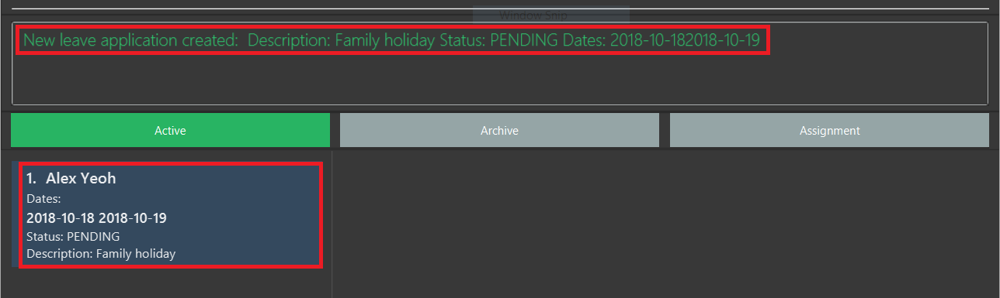
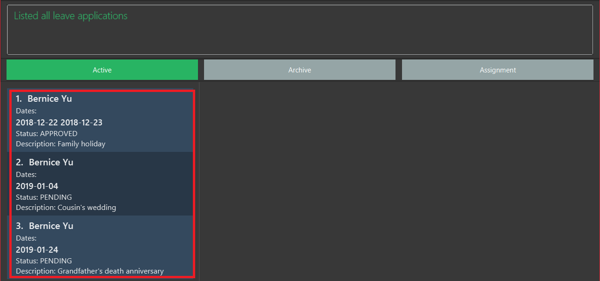
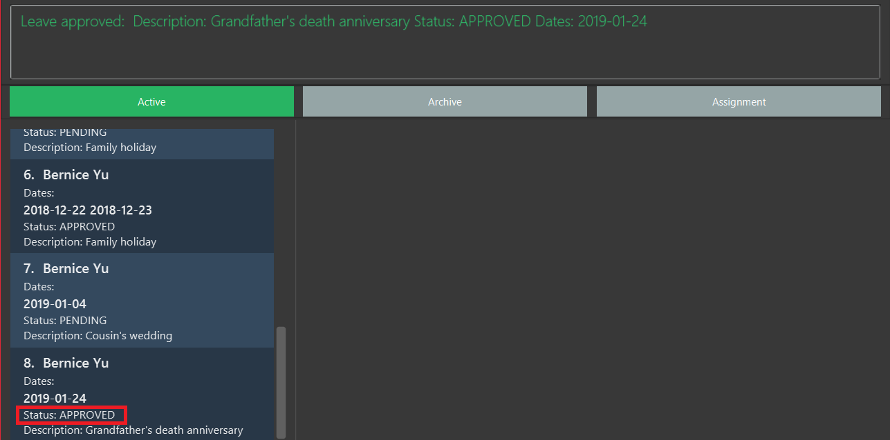

Overview
This document is a record of my work done on the Office Assistance Specialized Integrated System (OASIS) project. For the software engineering project, the team was tasked to conceptualize and implement enhancements to build upon an existing AddressBook application.
OASIS is an office administration and communication application for small-to-medium sized enterprises. With the use of primarily textual commands coupled with a beautiful user interface, you can get your administrative jobs done faster than with traditional point-and-click applications. Some of its main features include employee records management, authentication and permissions, assignment management, and leave management.
Summary of contributions
This section documents the major and minor contributions that I have made to this project.
-
Major enhancement: implemented a leave management feature
-
What it does: this feature allows an employee to apply for leave on specified dates. Also, it allows the user to view his/her own leave applications with their current status. Finally, it allows a user, with the required permissions, to view all employee leave applications and the ability to approve or reject them.
-
Justification: This leave management system provides an extremely quick and easy way for employees to apply for leave and view the status of their current applications. It also consolidates all employee leave applications into one place, and is thus very useful for managers who have many employees under them. It also provides a simple way for managers to approve or reject employee leave applications.
-
Highlights: I picked up many technical skills that include writing tests, writing clear documentation, continuous integration, and the Git workflow. I also learnt about how the Event-driven architecture is implemented and utilized.
-
-
Code contributed: see on Reposense
-
Other contributions:
-
Team:
-
I helped my team mates with understanding and using the Storage component during development. I was in-charge of getting to know the in-and-outs of this component in the initial phases of the project, and then use this knowledge to assist whoever needed help with it.
-
-
Project management:
-
Managed releases
v1.1-v1.4(4 releases) on GitHub
-
-
Enhancements to existing features:
-
Documentation:
-
Updated the Model class diagram in the Developer Guide to better represent all the features that we built.
-
Added documentation in the Leave Application section of the Developer Guide, for the leave management feature I implemented.
-
-
Community:
-
Contributions to the User Guide
Given below are sections I contributed to the User Guide. They showcase my ability to write documentation targeting end-users. |
Apply for leave : leaveapply
Apply for leave on specific dates.
Format: leaveapply -de DESCRIPTION -da DATE [-da DATE]…
If the DATE is of an illegal format, the command will be rejected.
|
Example: leaveapply -de Family holiday -da 2018-10-18 -da 2018-10-19
The system will display a message indicating a succesful creation of the new leave, as shown:

If you do not see your list of leave applications, run the leavelist command.
|
View a list of leave applications : leavelist
Displays a list leave applications that you have made.
Format: leavelist
A list of your leave records will be displayed in the left panel. An example is shown below:

| If you have the "VIEW_EMPLOYEE_LEAVE" permission, all other employee leave applications will be shown too. |
Approve a leave application : leaveapprove
Sets the status of a leave application to the "Approved" status.
Format: leaveapprove [INDEX]
| To use this command, you must have "APPROVE_LEAVE" permissions. |
Example: leaveaprove 8
The status of the 8th leave application displayed with leavelist is changed to APPROVED, as shown:

Contributions to the Developer Guide
Given below are sections I contributed to the Developer Guide. They showcase my ability to write technical documentation targeted at future developers (like NUS Copmuter Science students) of OASIS, and the technical depth of my contributions to the project. |
Leave Application
In OASIS, an employee can make a leave application by specifying a description, as well as the dates, that he or she wishes to apply for. Users are also able to view a list of all their own leave applications and their details, while those with the required permissions have the added ability to view all leave applications of all employees, as well as approve or reject leave applications.
Current Implementation
A leave application is represented by a LeaveApplication model object, as follows:

API: LeaveApplication.java
A leave applications contains a description, status (PENDING, APPROVED, or REJECTED), and one of more dates.
The LeaveApplication constructor removes duplicates, and orders all dates in ascending order.
|
Applying for leave
This section describes and illustrates how an application for leave by a user works in OASIS.
The user issues a leaveapply command, which includes a description and one or more dates, in the command box UI. The Logic Manager in the Logic Component is then called upon to execute the command. The Model is then updated with the changes, and finally the EventsCenter is notified of this, and it goes on to ask the Storage Component to update the stored file data. This component-level interaction is depicted as follows:

leaveapply -de family holiday -da 2018-11-11 command| There are further interactions of the EventCenter reacting to the event raised with the Storage Component, but they are ommitted. |
Now, we zoom in on the Logic Component to have a more detailed look as to how the leaveapply command is handled. The command entered is firstly parsed to ensure validity, and then a new LeaveApplication is instantiated with the data parsed from the command. This LeaveApplication is kept inside a newly created LeaveApplyCommand, which is then executed to update the Person in the Model, which corresponds to the user who applied for leave. The sequence diagram is as follows:
leaveapply -de family holiday -da 2018-11-11 is executed| There are further interactions within the Model component that are omitted. |
Given below is an example usage scenario and how the leave application mechanism behaves when a new leave application is made by an employee:
-
The user executes the
leaveapply -de family holiday -da 2018-11-11command. TheLeaveApplicationwill be initialized with the specifiedDescription(family holiday), and one or moreDate(2018-11-11), and itsLeaveStatuswill be the initial value ofPENDING. -
The new
LeaveApplicationwill then be added to its correspondingPerson, which represents the employee that applied for the leave. Internally, a duplicatePersonis created with the newly addedLeaveApplication, and the originalPersonin the Model will be replaced with that newPerson(seeLeaveApplyCommand.javafor more details). -
In the
Storage, theLeaveApplicationwill be copied and transformed to become anXmlAdaptedLeaveApplicationobject, which is then added into theXmlAdaptedPersonrepresenting the person who applied for the leave, and finally saved into a file by the Storage component.
Viewing leave applications
Employees can view their leave applications using the leavelist command. Given below is an example usage scenario of how OASIS behaves when a user issues this command:
-
The user executes the
leavelistcommand. -
The system checks if the user is an Admin, or has the required permissions (
VIEW_EMPLOYEE_LEAVEorAPPROVE_LEAVE). If so, all leave applications of all other users will be displayed. If not, only the current logged-in user’s own leave application records will be shown.
The following activity diagram summarizes how the command is executed:
| See "Design Considerations - How leave applications are listed" for further explanation of how the list of leave applications are retrieved and displayed. |
Approving or rejecting leave applications
Users with the required permissions can approve or reject leave applications made by other users. Given below is an example usage scenario of when a user issues a leaveapprove 3 command:
-
The user executes the
leaveapprove 3command (the index specified in the command is based on what is displayed when the user issues aleavelistcommand). -
The corresponding
LeaveApplicationWithEmployeeis retrieved from the list. For more details aboutLeaveApplicationWithEmployee, see "Design Considerations - How leave applications are listed". -
Internally, a duplicate
Personis created, with the original leave application being replaced with a copy of itself with anAPPROVEDstatus. The originalPersonin the Model will then be replaced with that newPerson, similar to what happens when applying for leave.
The leaveapprove and leavereject commands behave is nearly identical fashion, with the only difference being what the status that the specified LeaveApplication is changed to (either APPROVED or REJECTED).
|
Design Considerations
Aspect: How leave applications are stored
-
Alternative 1 (current choice): Saved only as a part of
Person.-
Pros: Easy to implement.
-
Cons: We need to go through every
Personto retrieve a list of allLeaveApplicationin the system to generate the list of all leaves.
-
-
Alternative 2: Stored only as a part of
AddressBook.-
Pros: Easy to implement.
-
Cons: We need to go through every
LeaveApplicationin the system when retrieving theLeaveApplicationfor a particularPerson.
-
-
Alternative 3: Stored as a part
Personas well asAddressBook.-
Pros: Fast retrieval for a particular
Person, as well as for the entire list ofLeaveApplication`s from `AddressBook. -
Cons: Redundant and duplicate storage for each
LeaveApplication. We need to ensure that when adding, editing, and deleting aLeaveApplication, it is updated correctly in both parts of the Model as well as Storage.
-
Aspect: How leave applications are listed
-
Alternative 1 (current choice): Leave applications are tagged with the user that applied for them (see
LeaveApplicationWithEmployee.java), and stored in aLeaveApplicationList.javainAddressBookin the Model Component. This additional tagging and storing into a list is done when the application is started where all leave applications are read from eachPerson, and also when any leave application is created or updated.-
Pros: Leave applications stored are lightweight, as they are kept within the
Personthat applied for them, and do not have to contain fields that uniquely identify thatPerson. -
Cons: This additional tagging, that only exists while the application is running, is slightly clumsy and not the best way to do it (see the note below Alternative 2 for more details).
-
-
Alternative 2: Leave applications contain the unique identification fields of a
Person.-
Pros: Leave applications innately store who applied for them, so no additional processing is required when generating the list of leave applications.
-
Cons: Leave applications will have to be stored with 3 additional fields that are used to unique identify a
Person. Also, if there are any updates to thePerson, it must be ensured that their corresponding leave applications will also have to be updated correctly.
-
Alternative 2 is actually cleaner to implement and understand. However, Alternative 1 is currently implemented because a Person has 3 identification fields, which means that a lot of unnecessary information would have to be duplicated and stored. In future versions, we suggest that each Person be given a unique ID number that can be used to identify them. This would make it convenient for other entities, like LeaveApplication, to store which Person it is linked to, without too much overhead incurred.
|